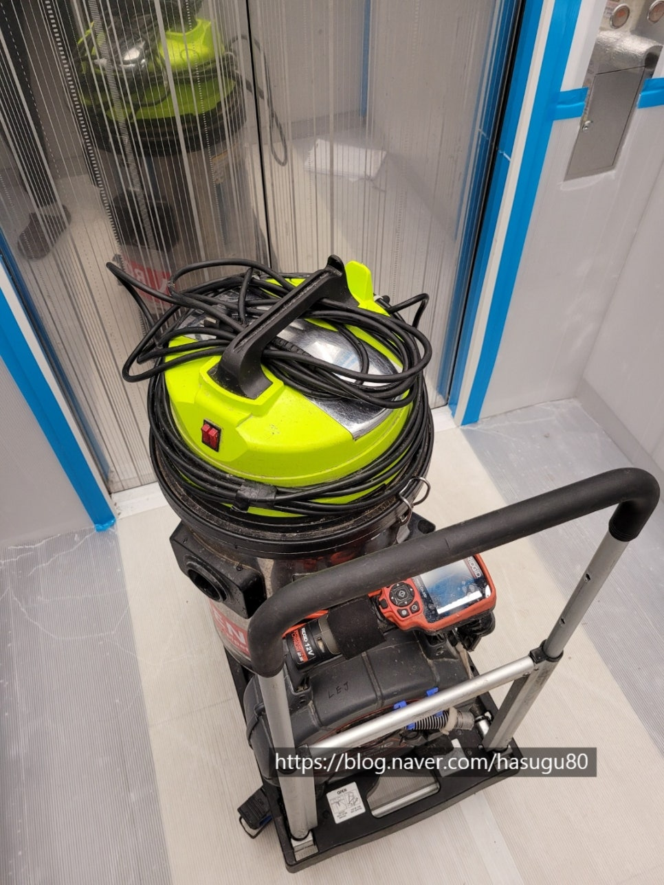
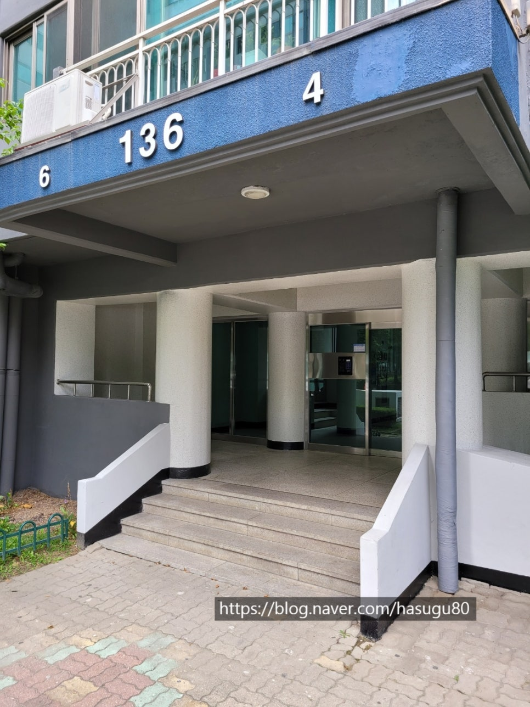
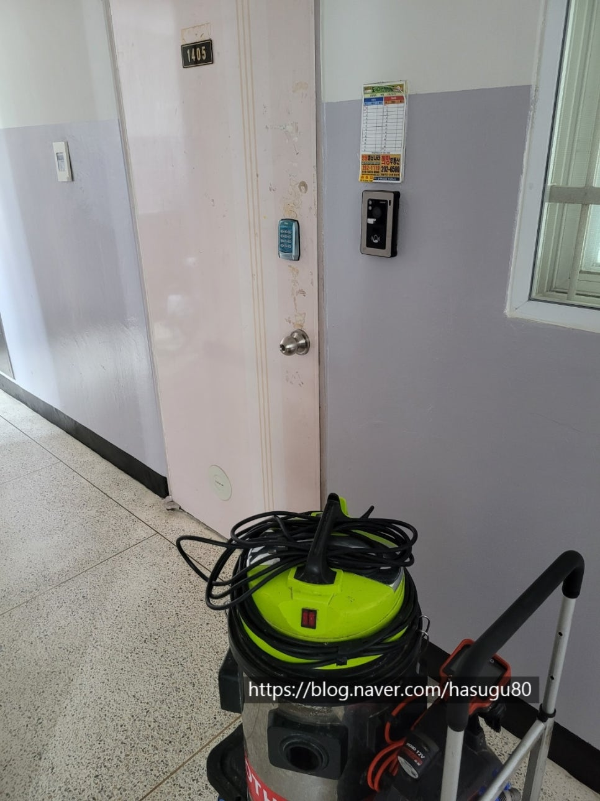
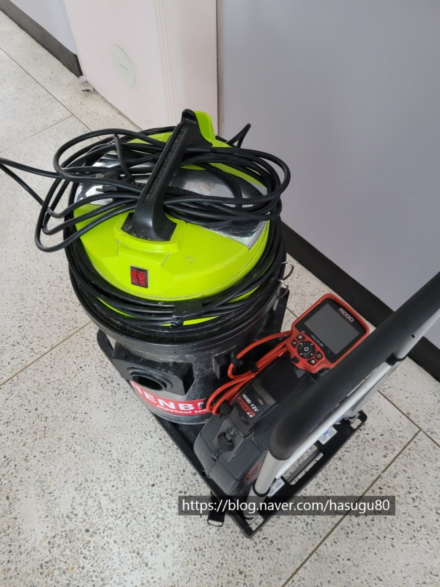
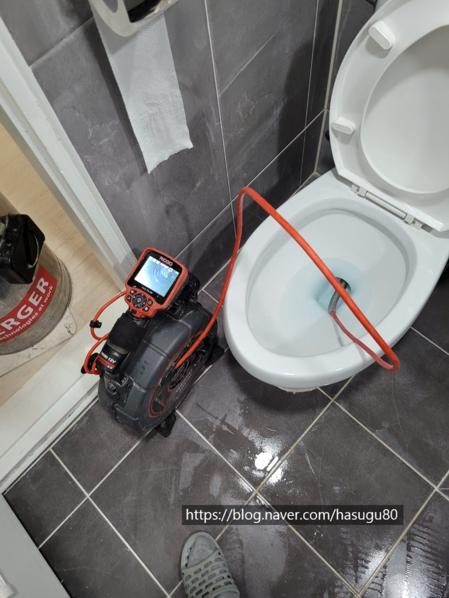
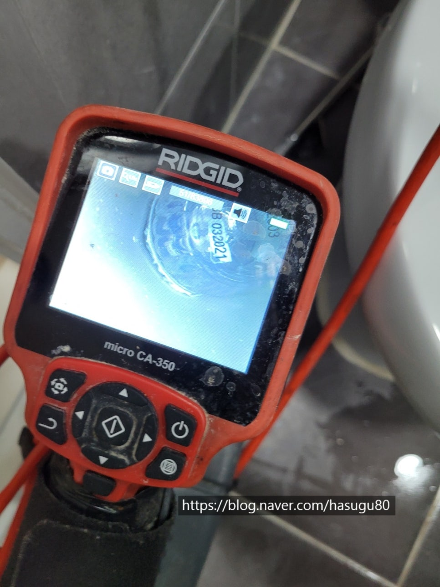
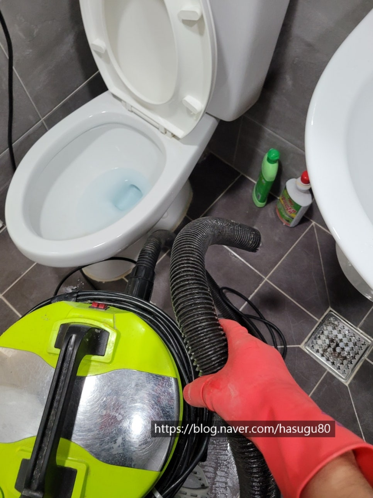

🏠 변기 이물질제거 권선동 영통동 하수구막힘
수원 싱크대막힘 전문 시공 후기

📋 작업 개요
- 위치: 수원
- 서비스 유형: 싱크대막힘, 변기막힘, 하수구막힘, 배관막힘, 뚫는업체, 배관청소, 고압세척
- 작업 일시: 2021. 9. 6. 23:55
- 업체명: 하수구수사대 (010-5615-2118)
🔍 문제 상황
변기 이물질제거 권선동 영통동 하수구막힘
변기는 우리가 생활하면서 없어서는 안되는 공간인데요
변기에 휴지이외에도 여러원인으로 생각지도
못한 것들로도 막히는 경우가 종종있습니다.
휴지나 물티슈의 경우에는 마트에서
판매하는 간단한 장비로도 해결하기도 하지만
음식물이나 딱딱한 이물질이 들어가면
오히려 상황이 더 악화 되기도 한답니다.
하지만 걱정마세요^^ 하수구수사대는 서울,경기,인천 전지역
신속하게 방문하여 속시원하게 해결해드립니다.
현장입구
오늘은 수원에 위치한 한 아파트에서 연락이 왔는데요
출발하기전에 고객님과 통화를 해보니
변기에 유리병이 들어간것 같다고 하셔서
절대 물을 내리지 마시고 그대로 기다려 달라고 부탁을 드렸습니다.
이유는 변기물을 내리거나 압축기로 펌핑을 하게되면
오히려 나오기보다 변기 깊숙한곳으로 밀려들어 갈수 있기때문에
그렇게되면 상황이 더 악화됩니다.
유리병이 변기 깊숙히 들어가면 변기를 해체하는
작업비용이 올라가기 때문에 신신당부를 드렸네요.

🔎 원인 분석
💡 전문가 진단: 하수구수사대010-2340-2118
입장준비
이물질제거에 필요한 장비를 소개하겠습니다.
변기내부를 확인할수 있는 내시경 장비와 이물질을
흡입하여 빼내는 석션장비입니다^^
이걸로도 충분하다는 판단을하여 많은 장비를 챙기지 않았고
고객님을 위해서라도 금방해결되길 바라고 입장을 하였습니다^^
하수구수사대
010-2340-2118
내시경검수
우선 입장하여 변기에 이물질이 어떻게 어디에
끼어있는지 확인하기위해 내시경장비를 투입하였습니다.
다행히 부피도 있어서 깊은곳까지 넘어가지 않았네요^^
고객님께서 물을 내리는 순간 병을 건드려떨어 뜨렸다는데
잡을 틈도없이 빨려들어가 #변기막힘 상황이 발생되었다네요.
대부분 음식물은 일부러 버리다가 막히는 경우가 많은데
이러한 플라스틱,나무,장난감,수세미 등등 이물질은
청소를 하다가 또는 변기를 내리는 찰나에
이물질이 떨어져 들어가는 경우가 많더라구요.
이물질이 들어가게되면 변기구멍이 지름5cm가량 되는데
그곳을 통과하지 못하고 걸려있게되면
변을보거나 휴지를 넣으면 #변기막힘 원인이

🔧 작업 과정
될수 있습니다.
흔한증상으로는 집에 있는 장비로 막혀서 뚫었는데
또 변이나 휴지를 넣으면 막힘증상이 반복되어 나타납니다.
그렇땐 되도록 전문가의 도움을 받는것을 추천드립니다^^
석션작업
석션호스를 변기관에 넣어
강력하게 흡입하여 빼내는 작업을 하였습니다.
보통 왠만한 이물질은 모두 흡입하는데
간혹 길다란 물질이나 깨진유리,생선가시,족발뼈 등
무겁거나 공기저항이 없는 이물질은 빼내기가
쉽지 않을때가 종종 있습니다.
그럴땐 어쩔수없이 변기를 탈거작업을 해야해서
변기에 절대 음식물은 넣지 마시길 부탁드립니다^^
유리병
변기막힘 원인이 바로 요놈입니다^^
이쁜 향수병이네요 ㅎㅎ
어쩌다 향수병이 변기에 빠졌는지 냄새와 향기가
한판 붙었군요. ㅋㅋ
마무리는 확실하게 하기위해
이물질 제거후 내시경검수를 진행하였습니다.
보시는것처럼 변기에서 최종적으로 나가는
구멍이 뻥~~뚫려있네요^^
가끔 고객님들께서 변기에서 오물이 나가는
구멍을 더크게 만들면 변기가 안막히지 않겠냐고
물어보곤 하시는데 그럼 저는 이렇게 답변합니다.
"고객님! 이물질이 배관안으로 들어가면 배관이 막혀서
더많은 비용이 발생하고 배관이 막히면
1층이나 반지하처럼 저층세대처럼 남에게
피해를 줄수가 있어요~~ 라고 답변을 드립니다^^
정말 우리집 화장실에서 떵물이 넘친다면
정말상상도 하기싫네요 ㅋㅋ
테스트


✅ 작업 완료
변기에 휴지를 넣고 잘 내려가는지
테스트를 해줍니다.
내시경으로 보았지만 이렇게 한번더 해줘야 속이 시원하더라구요 ㅎㅎ
저희 하수구수사대는
변기막힘,싱크대막힘,각종하수구막힘,고압세척 등등
하수구관련된 일은 전문적으로 하고있으며
서울,경기,인천 수도권 전지역
로켓방문 가능하오니
언제든지 연락바랍니다^^




⚠️ 주방 싱크대 배관 막힘 예방 수칙
- ✅ 기름기가 묻은 식기나 프라이팬은 설거지 전 키친타올로 반드시 기름때를 닦아내세요.
- ✅ 주기적으로 싱크대 개수대에 뜨거운 물을 가득 받아 한 번에 내려 배관 내부 기름을 씻어내세요.
- ✅ 배수구 거름망을 미세한 필터로 사용하시고 음식물 찌꺼기가 틈으로 새어 들지 않게 관리하세요.
- ✅ 베이킹소다와 식초를 뜨거운 물과 함께 일주일에 한 번씩 부어주면 배관 살균과 막힘 예방에 좋습니다.
💡 핵심 정리
- 확실한 장비 작업(내시경 점검 및 샤프트 스케일링)으로 원인을 뿌리 뽑습니다.
- 작업 후 1년 이내에 동일한 부위 재발 시 100% 무상 A/S 서비스를 보장합니다.
- 서울 · 경기 · 인천 전 지역에 24시간 언제든 긴급 출동할 수 있도록 항시 대기 중입니다.
❓ 자주 묻는 질문 (FAQ)
🚨 수원 싱크대막힘 문제로 고민이신가요?
정확한 원인 진단과 확실한 시공으로 재발 없는 해결을 약속드립니다.
24시간 긴급 출동 | 서울 · 경기 · 인천 전지역 | 1년 내 재발 시 무상 A/S